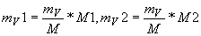
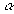

|
В. И. ЕЛИСЕЕВ ВВЕДЕНИЕ В МЕТОДЫ ТЕОРИИ
ФУНКЦИЙ ПРОСТРАНСТВЕННОГО КОМПЛЕКСНОГО ПЕРЕМЕННОГО |
|
6.4. Альфа распад. Схема расчета распада. Ошибочность теории кулоновского барьера. Структура пространства в малых линейных размерах.
Пространственно –временные координаты служат ареной на которой происходят физические явления.
Линейные координаты и время входят в уравнения или систему уравнений , которые описывают поля взаимодействий различной физической природы. Вывод и обоснование таких уравнений является задачей квантовой механики с целью извлечения из них практических экспериментальных предсказаний. Решением этих уравнений являются волны. Волновая механика Шредингера основана на волновом уравнении. Решением уравнений Шредингера являются волны де Бройля. Все это известные теоретические факты .
Волновая механика Шредингера и теория Гейзенберга имеют общую основу, которым является абстрактное векторное пространство. Абстрактное векторное комплексное пространство это объект , в котором структурирование пространства интерпретируется суперпозиций волновых функций. Фактически матричная механика Гейзенберга главное внимание уделила векторному аспекту теории , а волновое уравнение играет второстепенную роль.
В данной работе абстрактное векторное пространство как арена физических явлений заменена
n-мерным комплексным пространством. a-Мерное комплексное пространство и его геометрия построено на законах алгебры вещественных чисел. Законы классической математики перенесены в n-мерное пространство чисел. В этом пространстве повышение размерности влечет за собой приобретение новых свойств классическими функциями и т.д. , смотри предыдущие главы.В волновой механике Шредингера размерность пространства фактически не связана со структурой пространства. Главные квантовые числа введенные для описания структуры не согласованы с размерностью пространства. Повышение размерности в решении качественно не дает ничего нового.
Перенос классической алгебры в
n -мерное пространство фактически открыл КОД формирования структуры пространства , которую можно рассчитать до любых малых линейных размеров, вплоть доВ трех последующих рисунках даны наглядные примеры формирования структуры с ростом размерности пространственного комплекса.
В предыдущих главах было установлено соответствие структуры задаваемой
n-мерным комплексом структуре установленной в атомной и ядерной физике и периодической таблицей элементов. В данном случае идет речь о электронных оболочках атома , о формировании ядерной материи.Пространство Миньковского является частным случаем
Преобразования Лоренца явились основным фактом , который потребовал введения
n-мерного комплексного пространства на базе законов классической алгебры. Теоретическая физика выбросила самое главное следствие из преобразований Лоренца и вместе с этим выбросила возможность эффективно исследовать структуру физического пространства. Это грубейшая ошибка теоретической физики явилась следствием отказа математики развивать идеи комплексного анализа О.Коши в пространство. Создание векторного и скалярного пространств , которые не отвечают алгебре вещественных чисел являлось также грубейшей ошибкой.Исследования на базе абстрактного векторного комплексного пространства не могут дать желаемых результатов по созданию единой теории поля взаимодействий и обречены на неуспех.
В результате исследований в предыдущих главах и обоснования циклонной модели ядер на базе структуризации пространства на малых линейных расстояниях, ядра тяжелых элементов формируются из двух блоков . Этот результат подтвержден различными исследованиями и неоднократно подчеркивался.
Один блок- это ядро изотопа с шестью энергетическими туннелями с коэффициентом равным
Эту схему образования тяжелых ядер будем называть модой структуризации или коротко, просто модой.
Возбужденное состояние ядра (А,
Z) определяется модой структуризации. Перебор мод фактически дает тот инструмент, который дает возможность оценить процессы , происходящие в ядре. Процессы происходят в поле ядерных сил и это фактически первая попытка проникнуть в процессы в столь малых линейных расстояниях.Для большей ясности схема расчета будет продемонстрирована на конкретном примере. Рассматриваем моду состояния
( Z,A)
Знак плюс здесь условный. Для моды имеем естественное равенство основных параметров:
.
Конкретный пример взят первой строчкой таблицы
Ядро изотопа платины
имеет . Первый блок в виде ядра имеет , второй блок в виде ядра кобальта имеет . Сумма коэффициентов превышает коэффициент ядра платины , так как коэффициенты рассчитаны для основных состояний , а заданная для исследования мода дает возбужденное состояние ядра.Исходное ядро (А,
Z) характеризуется массой М, энергией связи , интегральным обменным квантом .ОбозначимМода может быть задана такой , что разность между энергией исходного ядра
и суммой энергий блоков может быть положительной , отрицательной и равной нулю.Если энергия возбуждения
то фактически мода существовать не может.Состояние ядер блоков в составе исходного ядра определяются параметрами
. Произведем вычисления этих параметров.
Обменный квант исходного ядра перераспределился пропорционально массам. Естественно, что
.
Обменные массы ядер блоков в исходном состоянии отличаются от вычисленных и могут быть равными им, меньше и больше . Это и есть мера возбуждения блоков. Вычислим энергию связи ядер блоков в ядре (А,
Z).
Сумма энергий . Энергия исходного ядра равна сумме энергий ядер блоков .Каждый из блоков находится в возбужденном состоянии относительно основных ядер , соответственно с теми же параметрами .В связи с этим возбужденное состояние исходного ядра определяется суммой энергий возбуждения каждого из блоков, когда образовалась конкретная мода
Или
. Если , то оценимВозбуждение блоков реализуется через радиоактивные распады.
Оценим возможность

Ядро и электрон  имеют массу и энергии связи в основном состоянии соответственно равными
имеют массу и энергии связи в основном состоянии соответственно равными  . Внутренняя энергия связи электрона принимается равной нулю.
. Внутренняя энергия связи электрона принимается равной нулю.
Обменный квант ядра в ядре ядра  корректируем по обменному кванту .
корректируем по обменному кванту .
,
Соответственно энергии связи вычисляются по формулам
Энергия возбуждения для
Оценим потенциальную энергию a-Распада ядра первого блока.
Схема распада
Обменный квант ядра индия
с массой в ядреЭнергия связи ядра Индия в блоке ядра
.
Состояние
-частицы в блоке ,
,
энергией связи
энергия сжатия или расширения
-частицы определится как разность энергии связи основного состояния и энергии связи внутри блока, где -энергия связи свободной a-частицы .
В результате потенциально необходимая энергия для реализации a-распада вычисляется по формуле , где за обозначена энергия основного свободного состояния ядра индия.
Аналогичные вычисления проведем для второго блока , представленного ядром кобальта.
Электронный распад кобальта происходит по схеме
Последовательно вычисляем обменные кванты ядра никеля и его энергию связи в ядре кобальта, а также обменный квант электрона и его энергию .
, где массы ядра никеля.
Интегральный обменный квант в блоке 2 для всех исследуемых продуктов потенциального распада постоянен и равен этой же величине первого блока, поэтому вычисления обменного кванта электрона во втором блоке можно не производить, так же как величину  -сжатия электрона во втором блоке. Величина определяет кинетическую энергию электрона , который образовался внутри блока перед его распадом. Энергия необходимая для реализации электронного распада вычисляется по формуле
-сжатия электрона во втором блоке. Величина определяет кинетическую энергию электрона , который образовался внутри блока перед его распадом. Энергия необходимая для реализации электронного распада вычисляется по формуле
Рспад блока должен происходить по схеме
Вычисляем обменный квант ядра
и его энергию связи когда оно находится во втором блоке
, где обозначение массы ядра марганца.
Мини оглавление:
[0], [1.1.1, 1.1.2, 1.1.3, 1.1.4, 1.1.5, 1.1.6, 1.1.7, 1.1.8, 1.2, 1.2.1, 1.2.2, 1.2.2.a, 1.2.2.b, 1.2.2.c, 1.2.2.d, 1.2.2.e, 1.2.2.f, 1.2.2.g, 1.2.2.h, 1.2.3, 1.3.1, 1.3.2, 1.3.3, 1.3.4, 1.3.5, 1.3.6, 1.4.1, 1.4.2, 1.5, 1.6, 1.7.1, 1.7.2, 1.7.3.1, 1.7.3.2, 1.7.3.3, 1.7.4.1, 1.7.4.2, 1.8.1], [2.1, 2.2],[3.1, 3.2, 3.3, 3.4.1, 3.4.2, 3.4.3, 3.4.4, 3.4.5],[4.1, 4.2, 4.3, 4.4],[5.1, 5.1.Рис.52, 5.2, 5.3, 5.4, 5.4.Т1, 5.4.Т2, 5.4.Т3, 5.5.1, 5.5.2, 5.5.3, 5.5.4],[6.1.1, 6.1.2, 6.2.1, 6.2.2, 6.2.3, 6.2.4, 6.2.5, 6.3, 6.4.1, 6.4.2, 6.5.1, 6.5.2],[7.1, 7.2, 7.3, 7.4, 7.5, 7.6, 7.7.1, 7.7.2, 7.8.1, 7.8.2, 7.8.3, 7.9],[8.1, 8.2.1, 8.2.2, 8.3, 8.4, 8.5, 8.6, 8.6.T1, 8.7, 8.8.1, 8.8.2, 8.8.3, 8.9.1, 8.9.2, 8.9.3, 8.10, 8.10.T2, 8.10.T3],[9.1, 9.2, 9.3, Рис.88, 89, 90, 91, 92, 93, 94, 95, 96, 97, 98, 99, 100],[10.1, 10.2, 10.3, 10.4, 10.5, 10.6, 10.7, 10.8, 10.9, 10.10, 10.11, 10.12, 10.13, 10.14, 10.15.1, 10.15.2, 10.16.1, 10.16.2, 10.17, 10.18],[11]
Размещенный материал является электронной версией книги: © В.И.Елисеев, "Введение в методы теории функций пространственного комплексного переменного", изданной Центром научно-технического творчества молодежи Алгоритм. - М.:, НИАТ. - 1990. Шифр Д7-90/83308. в каталоге Государственной публичной научно-технической библиотеки. Сайт действует с 10 августа 1998.
E-mail: mathsru@gmail.com